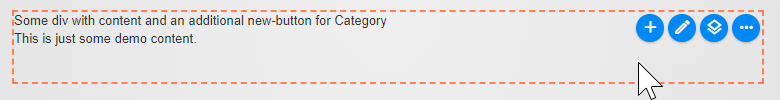
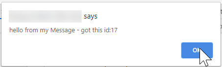

How To Customize the Toolbars
A lot in 2sxc is fully automatic. But sometimes you want to customize how the content editor can work.
Note
2sxc 10.27 introduces a much simpler system, which is what is shown here. Previously everything was possible, but quite complicated. So if you find examples out there which look very different - they work as well, but here's the simple system.
Live Examples
The Dnn Tutorials have a live demo of toolbar customization. Head over there while reading these docs to see all this in action.
Overview - What You can Customize
You can customize just about everything:
- hover-behavior - you may want hover, maybe not, and maybe to the right | left
- colors using color names, hex-codes or CSS classes of the entire toolbar or just of individual buttons
- you can just enhance/change the default toolbar or create a custom one with just your buttons
- you can change the button groups - add, remove etc.
- you can add/remove buttons as you need
- you can create buttons with custom icons
- you can even call custom code from your custom buttons
Important
This will show you how to do things in Razor, but the same principles apply to plain HTML-Toolbars. We assume that 99% of all toolbars will be initiated from razor, so that's what we'll be showing here.
Getting Started with Custom Toolbars
Usually your code will look a bit like this:
<div @Edit.TagToolbar(Content)>
...
</div>
This will create a standard hover-toolbar with some buttons and the more ellipsis button. Note that the exact combination of buttons is auto-detected. So you may just have an edit but you may also have an add etc. depending on the template and the data it receives. It looks approx. like this:
Add our First Button
Let's add an extra new button to create an item of the content-type Category.
Note
This code will make the button appear, but on click you may see an error, because you probably don't have a ContentType Category in your app.
<div @Edit.TagToolbar(Content, toolbar: "+new?contentType=Category")>
...
</div>
You should now have an extra + button like this:
Let's emphasize it, because for whatever reason it's a super important button. We'll also drop the leading + since it's optional and defaulted to:
<div @Edit.TagToolbar(Content, toolbar: "new&color=red?contentType=Category")>
...
</div>
You should now have a red + button like this:

Important
The term new in this example means we want a button of type new which will open the dialog to create new entities.
We could also write app&color=red which would add a button to manage the app.
So new ≠'new button' but 'button to add a new entity'. The full list of button names can be found in the CMS Commands list.
Adding more Buttons
Now we want to add another button - maybe to add a Tag. The toolbar attribute on the Edit.TagToolbar can take various kinds of objects, but for the new simple API it only accepts string objects or string[] arrays. So to make multiple changes to the toolbar, we'll have to give it a string[] array like this (note that we can use line-breaks, to make the code easier to read):
<div @Edit.TagToolbar(Content, toolbar: new [] {
"new&color=red?contentType=Category",
"new&color=teal?contentType=Tag"
})>
...
</div>
You should now see this:

Tip
When creating new items you can also add prefill default values. This is great for News-Apps where you want to prefill the date or for list of something where you want to prefill the category. Check out the specs.
Removing Buttons with -
Now maybe you don't like to allow your editors to change the view - so let's do the same but remove the view-switch button as well using the remove - prefix:
<div @Edit.TagToolbar(Content, toolbar: new [] {
"-layout",
"new&color=red?contentType=Category",
"new&color=teal?contentType=Tag"
})>
...
</div>

So you can add / remove any button you want. You can find a full list of button names (command names).
Modifying Existing Buttons with %
But what if we want to modify an existing button? Let's change the icon and both colors of the layout (view) button using the modify % prefix:
<div @Edit.TagToolbar(Content, toolbar: new [] {
"%layout&icon=icon-sxc-replace&color=white,maroon",
"new&color=red?contentType=Category",
"new&color=teal?contentType=Tag"
})>
...
</div>

As you can see, we just used % to modify a button, set the icon and 2 colors.
Show Only Our Buttons
But maybe we would prefer to have a toolbar with only the two add buttons, and nothing else. By default, the toolbar uses a template called default which contains all these buttons. But you can always start with an empty template. You'll find the full list of templates here.
<div @Edit.TagToolbar(Content, toolbar: new [] {
"toolbar=empty",
"new&color=red?contentType=Category",
"new&color=teal?contentType=Tag"
})>
...
</div>
Tip
As you can see, the principle is to use a toolbar template and make modifications to it.
Showing the Delete Button
Warning
A special case in modifying buttons is also to force-show the delete button which is hidden by default.
The reason it's hidden is because in most content-editing scenarios the editor should be able to remove content, but not delete it - in case it's re-used elsewhere.
But let's say you created a News App and want to allow the editor to also delete the news-items. Here's how:
<div @Edit.TagToolbar(Content, toolbar: "%delete&show=true")>
...
</div>
The delete button is in the third group of buttons, so you'll have to hit the ellipsis a few times to see it. You'll then see:
Adding Custom Groups
Let's assume you understand the principle of adding, removing and changing buttons. Let's add a custom button group with only the buttons you want - followed by the normal ellipsis-button with the standard functionality:
<div @Edit.TagToolbar(Content, toolbar: new [] {
"group=add-buttons",
"new&color=red&group=add-buttons?contentType=Category",
"new&color=teal&group=add-buttons?contentType=Tag"
})>
...
</div>
You'll get this result, and hitting the ellipsis will show you the default buttons as you can see in the second image:


Note
We had to give our new group a name - in this case add-buttons and told the new buttons that they should go inside that group.
Tip
A new group can also go after the default group of buttons. If you add a &pos=1 or another number the group will be placed later on in the sequence.
You can also use &pos=-0 or &pos=-1 or similar to place it counting from the end of the list.
Warning
When using position like pos=# you may have unexpected results, because the button is added to the list before some buttons decide to hide themselves.
So you may think you're adding it to pos=1 but if the edit button (which would be at position 0) shouldn't be shown, your button will still appear to be the first one.
There is also a hidden group called edit-advanced - you can find the list of groups here. As of now, it only contains the delete button which is hidden by default.
Attaching Custom JavaScript Code to a Button
Now you may want to call your own code when you create a button. This is very advanced stuff, but here's how:
<div class="demobox" @Edit.TagToolbar(Content,
toolbar: "custom&title=Message?call=myMessage&id=17")
>
This demonstrates a custom button with the call-name in the parameters.
</div>
<script>
function myMessage(context, event) {
console.log(context, event);
alert('hello from my Message - got this id:' + context.button.command.params.id);
}
</script>
You'll then see this toolbar, and on click this message:
You'll notice that we have a ?call=functionName and also an id=17 just to show how additional information is passed around. Your function also gets an event from the browser, so you can check the event.target and other things to see what was actually clicked.
Warning
This is very advanced stuff, you may run into difficulties to get this to fly 😉.
Debugging Custom Toolbars
In most cases if your problems will be caused by invalid syntax. It's easy to forget a closing quote " or a comma , to separate values. So always check that first.
If you really want to do deep debugging, you should use the $2sxc.insights() command in the console to see what whas processed and how. If you add ?debug=true to the url of the page, it will also log way more intermediate data for you to review.
Read More
Basically you have what it takes. To go further:
- review the specs.
- check out the list of commands/buttons